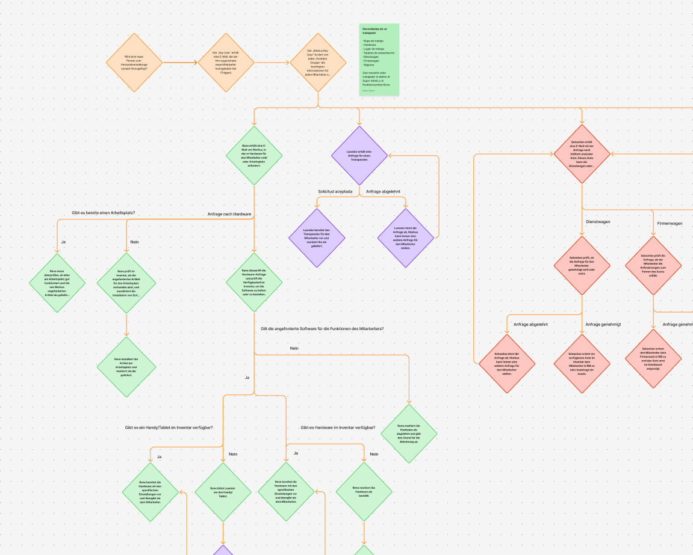
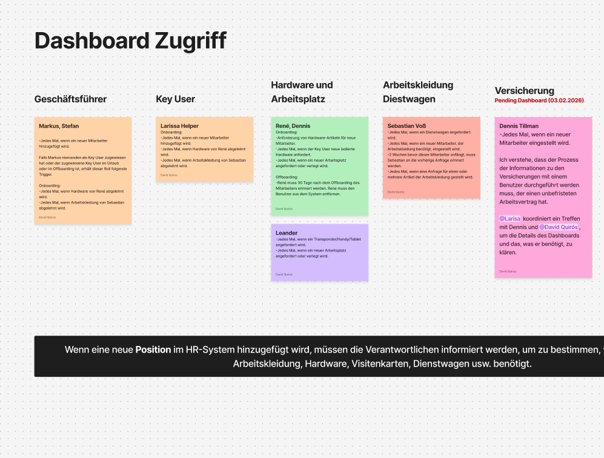
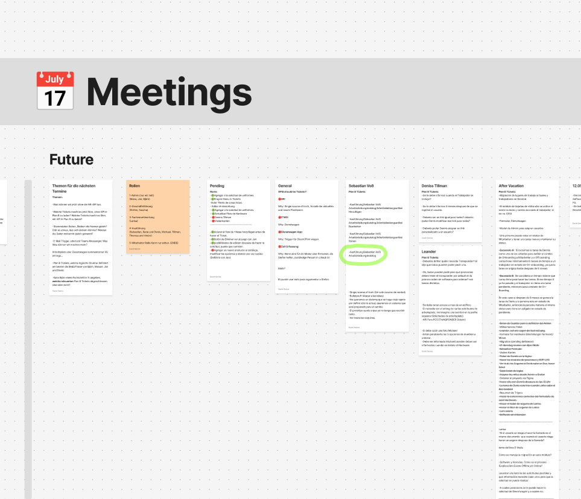
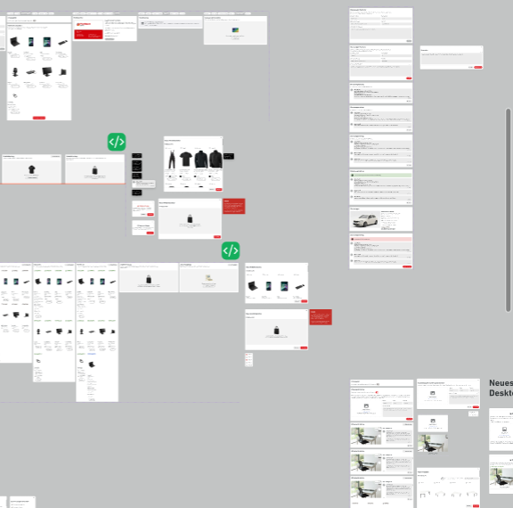
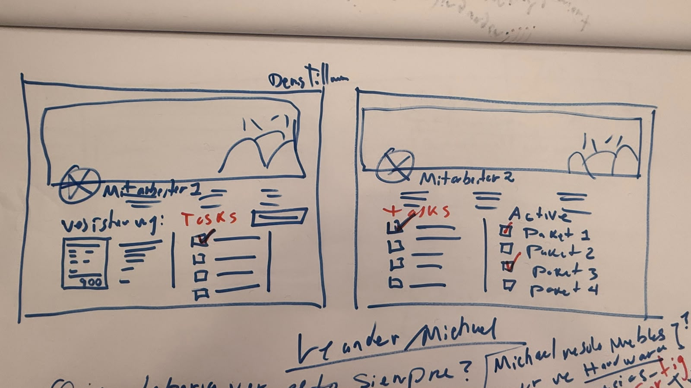
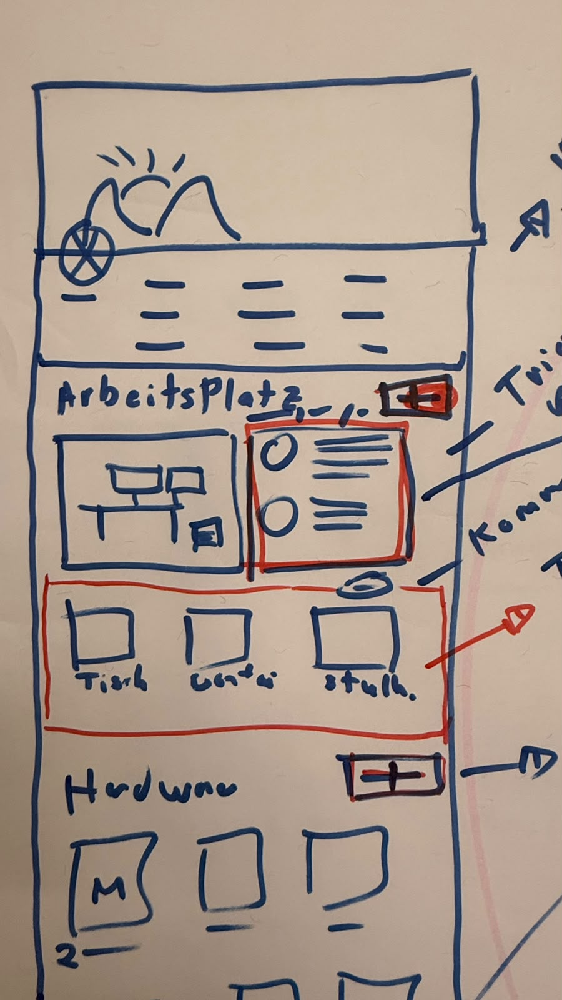
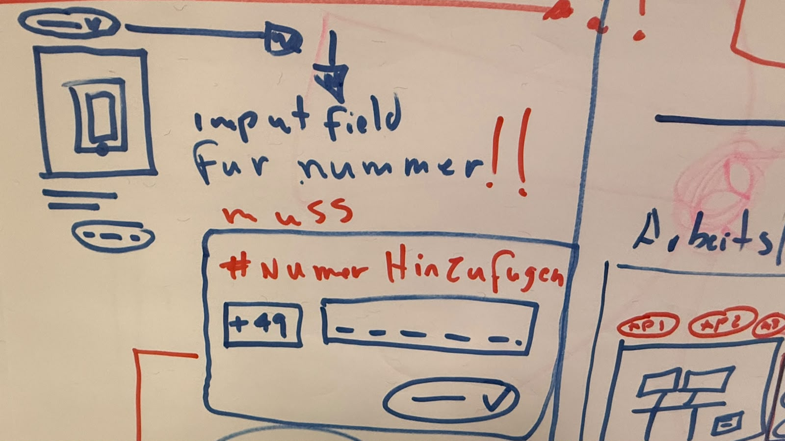
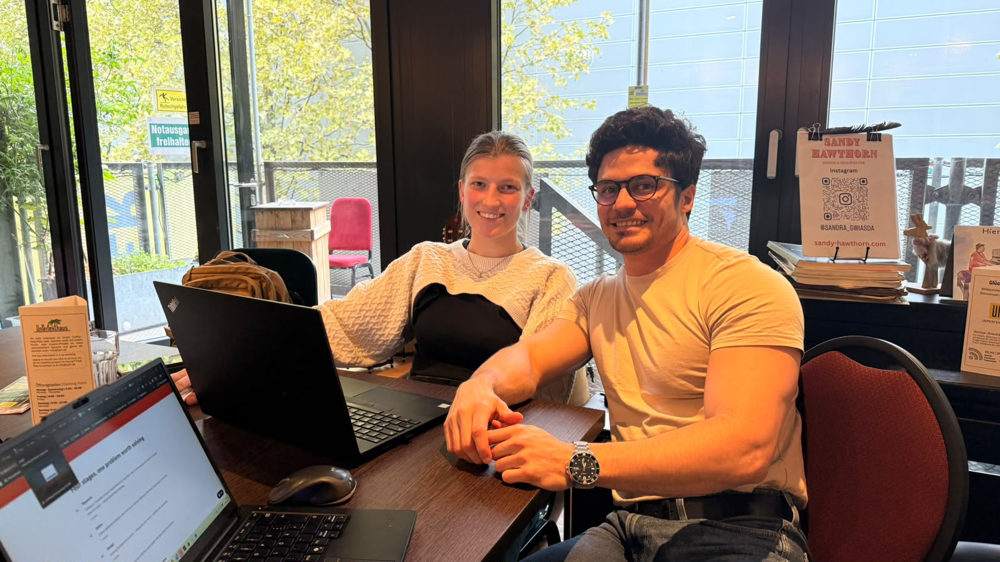

About the project
Onboarding Tool — turning chaos into one connected system.
An onboarding and offboarding webapp for Fischbach's 1,000+ workforce — coordinating hardware, software licenses, vehicles, access, furniture, insurance, and other resources in one system.
At that scale, managing resource handoff and return across departments becomes chaotic — no one has real-time visibility into what's missing for whom, delaying both a worker's start and their exit.
Behind the scenes
Before the pixels: what the mockups don't show.
Every screen came from somewhere — a conversation, a sketch, a flow that didn't work the first time. Here's the part before it looked finished.




Let's roll up our sleeves
This didn't come from a prompt, it came from listening to someone.
Before anything looked finished, wireframes let us test what actually worked — with the people who'd use it.



And yeap, I also use AI in my workflows.
The process
Four stages, one problem worth solving
Not a straight line — each stage fed the next, and a few looped back more than once.
-
Research
Talking to 15 people across 8 departments to map their role in onboarding and where it breaks down for them — before sketching anything.
3 months -
Define
Fifteen different problems, one root cause: no one could see what was happening in real time.
2 months -
Design
Turning the flow into screens — categories over forms, visibility over guessing.
5 months -
Validate
Testing the first version with the same people who described the problem.
3 months

Limitations
- — Third-party API access took 6 months — the entire trigger system depended on it.
- — Not everyone could be interviewed. Time constraints meant some perspectives came secondhand.
- — Data quality varied — some databases weren't clean enough to build on directly.
- — Explaining long, multi-step flows to developers is still a work in progress — videos, tickets, docs, whatever keeps nothing lost in translation.
Learnings
- — Interviews rarely give you the full truth. Asking the same thing a different way often revealed what the first answer left out.
- — German is my third language — a limitation some days, and the steepest professional growth curve I've chosen to keep climbing.